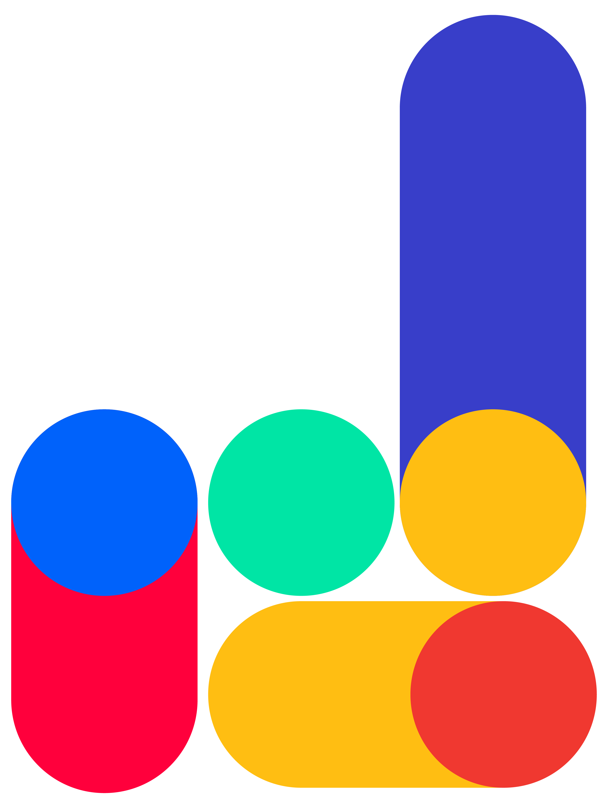
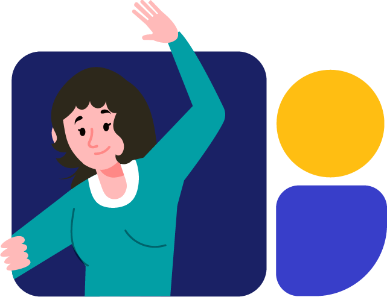
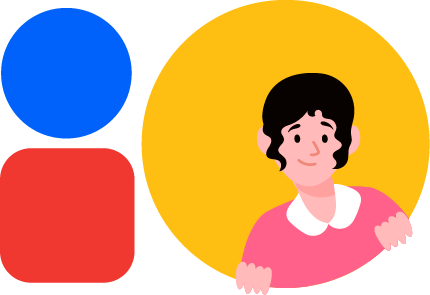
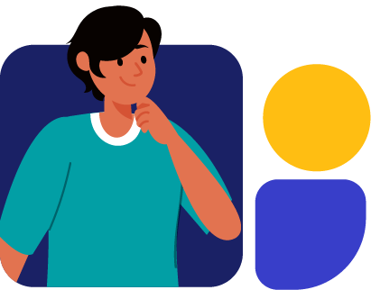
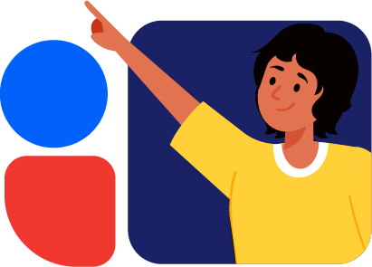

El propósito de este tamizaje es equipar a trabajadoras y líderes a identificar personas
con deficiencias en sus comunidades y referir a estas personas hacia servicios
que puedan mejorar su calidad de vida. El resultado brinda información sobre cuatro
categorías de deficiencias: 1) Físicas, 2) Visuales, 3) Auditivas, y 4) Cognitivas,
Emocionales, y de Desarrollo. También se puede ver una guía completa de estas deficiencias en la sección "Guía de Deficiencias", la cual puede encontrarse en el menú ubicado en la esquina superior izquierda de esta página.
Al finalizar el tamizaje se le dirigirá a una página donde encontrará el o los tipos de
deficiencia que podría presentar la persona, además de información acerca de
diferentes condiciones que pueden causarlos y los servicios correspondientes disponibles en Guatemala, los cuales puede encontrar completos en la sección "Directorio de Servicios".
Es importante comprender que el resultado del tamizaje no es un diagnóstico ni un tratamiento
clínico. Los diagnósticos y los tratamientos deben ser brindados por personal
clínico certificado. La finalidad de este tamizaje es ayudar a miembros de la comunidad
a identificar personas que podrían tener deficiencias, referirlos a los servicios
correspondientes, y apoyarlos a nivel comunitario antes de que acudan a un
servicio formal.
Presiona el botón para comenzar.



